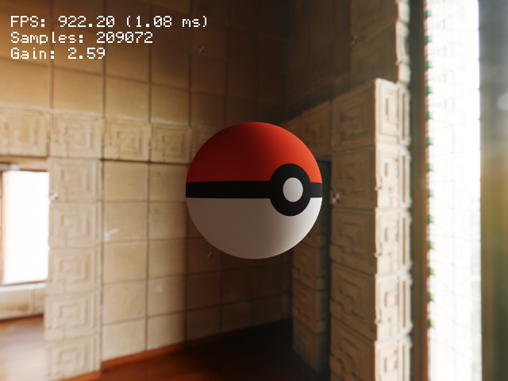
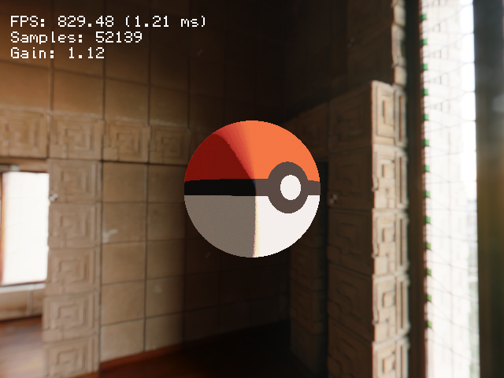
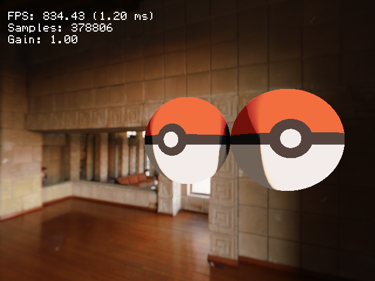

<div class="modal fade" id="pytracer_modal" tabindex="-1" aria-labelledby="pytracerLabel" aria-hidden="true">
	<div class="modal-dialog modal-xl">
		<div class="modal-content">
			<div class="modal-header">
				<h5 class="modal-title" id="pytracerLabel">PyTracer</h5>
				<button type="button" class="btn-close" data-bs-dismiss="modal" aria-label="Close"></button>
			</div>
			<div class="modal-body d-flex justify-content-center">
				<div class="col-md-9">

					<p>
						I implemented a GPU accelerated path tracer in python to quickly experiment with different rendering algorithms.
						The renderer allows interactive camera movement, and progressively accumulates samples in real-time, to converge to the final image.
						The code is available in the <a href="https://github.com/LohitPetikam/PyTracer">Github repository</a>.
					</p>


					<figure class="figure pt-4">
						<a href="../assets/images/pytracer/out_2018-02-02_15-22-29.png">
						
						</a>
						<figcaption class="figure-caption p-1">
							Diffuse shading from environmental lighting rendered using GPU path tracing.
						</figcaption>
					</figure>

					<div class="row pt-3 mb-3">
						<div class="col-6 col-sm-6 themed-grid-col">
							<figure class="figure pt-4">
								<a href="../assets/images/pytracer/out_2018-02-02_15-35-34.png">
								
								</a>
								<figcaption class="figure-caption p-1">
									Diffuse shading represented in a stylised way.
								</figcaption>
							</figure>
						</div>
						<div class="col-6 col-sm-6 themed-grid-col">
							<figure class="figure pt-4">
								<a href="../assets/images/pytracer/out_2018-02-02_17-10-43.png">
								
								</a>
								<figcaption class="figure-caption p-1">
									The stylised path-tracing handles self shadowing, global illumination, and ambient occlusion.
								</figcaption>
							</figure>
						</div>
					</div>


				</div>
			</div>
			<div class="modal-footer">
				<button type="button" class="btn btn-secondary" data-bs-dismiss="modal">Close</button>
			</div>
		</div>
	</div>
</div>
